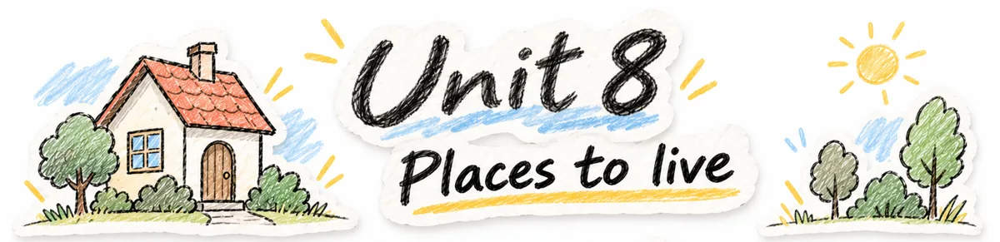

Unit 8 Test
Cutting Edge Pre-intermediate · 50 questions: Vocabulary, Grammar, Reading
Write your details and press Start. There is one question on each page. Press Next to go forward and Previous to go back.
Some questions are empty
Tap a number to go back to that question, or press Finish anyway.
Vocabulary
Grammar
Reading